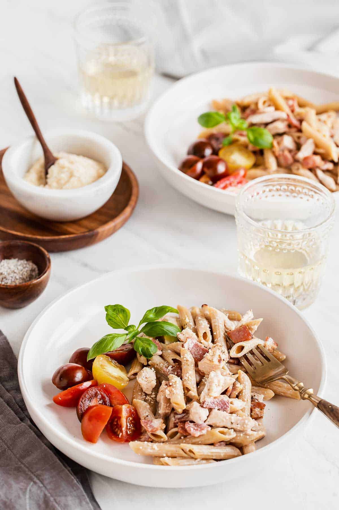

Home
Chicken Pasta

Description
This recipe is very tasty, and although it can look a bit daunting, it is very easy to make!
Ingredients
- 1 lb of your preferred pasta
- 1 lb of chicken breasts
- 1 onion
- 1 bell pepper
- 1 tomato
Steps
- The pasta: In a pot, add lots of water, and bring to a boil. When it starts boiling you can add your pasta, bring to a boil again, and cook for around 10 minutes. Keep an eye on it and stir frequently as it will stick to the pot if left unnoticed.
- The veggies: First, chop a third of your onion off, which we'll use for the chicken, and then you may chop your tomato, bell pepper, and the rest of your onion into small pieces.
- The chicken: Clean the fat off of your chicken breasts, chop each chicken breast into small to medium pieces, and place in a pot with water, in which it'll boil and cook. To this pot, add the piece of onion that we left unchopped, as well as some salt. Keep an eye on it as the water can boil completely. While uncooked, the chickens should always be covered in water, not by much, but covered.
- Last preparation: After the pasta is done, drain it, but save the water, as we'll use it when we mix it all together.
- Where it begins: In a pot, add oil, and then the vegetables we chopped earlier. At this point, the chicken should be already done, so drain it, crumble it, and add it to the pot with the vegetables whenever the onions look light brown.
- Where it ends: When it all looks well mixed together, add the pasta, mix, and continuosly add the left over water from the pasta to the mix, as you mix it all together.
- Finishing touches: Before calling it done, add salt and black pepper as needed, and mix so that the flavors get everywhere.
- Enjoy!!
Tips
- You can also cook the chicken on a pan or in an air fryer, instead of cooking it in a pot with water.